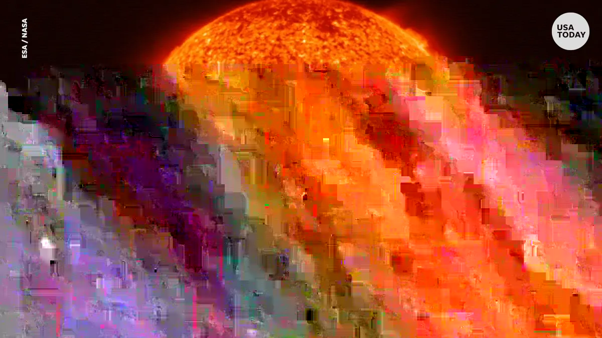

Słońce (łac. Sol, gr. Ἥλιος, trb. Hḗlios; symbol: ☉) – gwiazda centralna Układu Słonecznego, wokół której krąży Ziemia, inne planety tego układu, planety karłowate oraz małe ciała Układu Słonecznego. Słońce składa się z gorącej plazmy utrzymywanej przez grawitację i kształtowanej przez pole magnetyczne. Jest prawie idealnie kuliste. Ma średnicę około 1 392 684 km, około 109 razy większą niż Ziemia, a jego masa (1,989 ×1030 kg, około 333 tysięcy razy większa niż masa Ziemi (M⊕)) stanowi około 99,86% całkowitej masy Układu Słonecznego. Około trzy czwarte masy Słońca stanowi wodór, resztę głównie hel. Pozostałe 1,69% (co odpowiada około 5600 M🜨) tworzą cięższe pierwiastki, w tym m.in. tlen, węgiel, neon i żelazo.
Odległość od Ziemi
150 milionów kilometrów
8 min 19 s świetlnych